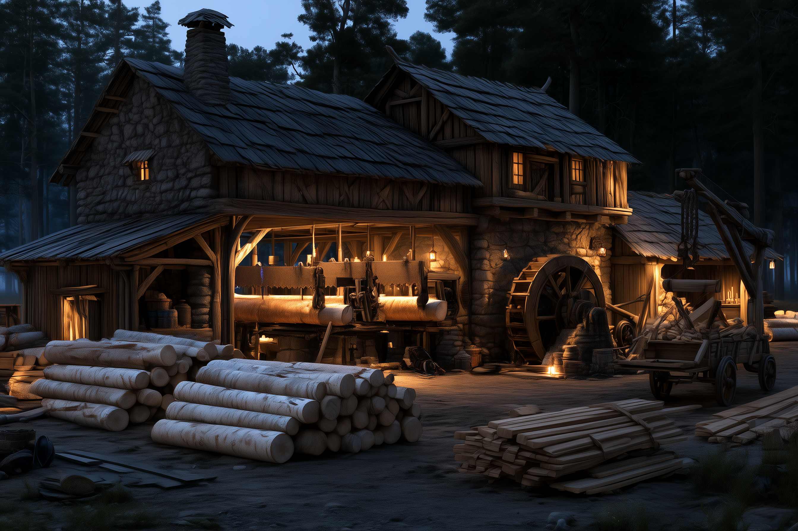

Votre premier regard sur le royaume.Commencez par votre chantier, puis consultez les mouvements de vos troupes.
⚑
Les hordes s’agitent au-delà des murs.Une menace PvE figure dans vos rapports. Préparez votre réponse.
LA CITÉ VIT
Vos ambitions prennent racine.
À suivre
Votre chantier
En cours

Scierie IV → V
Votre cité prépare sa prochaine étape.
00:24:1868 %
Présents dans la cité
Votre garnison
Sur les routes
Mouvements
3
Liste fictive · aucune mission réellement lancée
À la tête du royaume
Héros & conseil
Disponible
Votre héros
Chef du royaume
Talents · équipement · conseil
Portrait à définir · le sceau sert de repère provisoire
Votre prochaine décision
Préparer la suite.
Aperçu interactif · ressources, taux, niveaux, prestige, effectifs et durées fictifs. Toutes les actions sont locales et réinitialisées à la fermeture. Aucun compte, aucune commande de jeu.